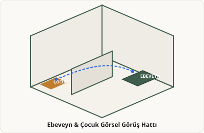

1. Tamamen Ayrı Çalışma Odası
Ana yaşam alanından akustik ve görsel olarak tam ayrılmış, kapalı çalışma mekânı.
Bu örnekte size uygun gelen nedir?

2. Cam Bölücülü Şeffaf Çalışma Alanı
Ortak yaşama görsel olarak bağlı kalırken ses geçişini cam panelle süzme kurgusu.
Bu örnekte size uygun gelen nedir?

3. Kayar Panelli Esnek Dönüştürülebilir Alan
Ahşap kayar kapılar ile ihtiyaç anında tamamen kapatılabilen esnek sınır kurgusu.
Bu örnekte size uygun gelen nedir?

4. Açık Ada Mutfak ve Yaşam Entegrasyonu
Mutfak tezgahının salon ve yemek alanıyla kesintisiz ilişkide olduğu açık düzen.
Bu örnekte size uygun gelen nedir?

5. Mahrem ve Kontrollü Mutfak Alanı
Hazırlık alanının salondan ve girişten doğrudan görülmediği korumalı mutfak kurgusu.
Bu örnekte size uygun gelen nedir?

6. Ebeveyn ve Çocuk Görüş Hattı
Çalışırken veya dinlenirken çocukların aktivite alanını takip edebilme imkânı.
Bu örnekte size uygun gelen nedir?
📊 Görsel Tercihlerinizden Anlaşılanlar
Bu özet doğru mu?
Ön Değerlendirme Mekân Programı
⚠️ Arsa, bütçe ve yönetmelik verileri eklenmeden kesin değildir.Günlük aile kullanımı, konuk ağırlama ve teras entegrasyonu.
Akustik mahremiyetli, gerektiğinde kapatılabilen bireysel çalışma mekânı.
Hızlı aile yemekleri ve günlük yiyecek hazırlık alanı.
Okul sonrası ders, oyun ve uyku alanı.
🕸️ Mekânsal İlişki Diyagramı
Mekânlar arasındaki doğrudan erişim, akustik ayrışma ve görsel temas şeması.
⚖️ Alternatiflerin Karşılaştırılması
Alternatif A (Kontrollü Ayrışma)
- 🔹 Daha güçlü akustik ayrışma
- 🔹 Daha az görsel bağlantı
- 🔹 Daha sabit mekân kullanımı
Alternatif B (Esnek Bağlantı)
- 🔹 Daha esnek çalışma-yaşam ilişkisi
- 🔹 Daha fazla görsel bağlantı
- 🔹 Açılıp kapanabilen esnek sınır
Hangi yaklaşım yaşam ritminize daha yakın görünüyor?